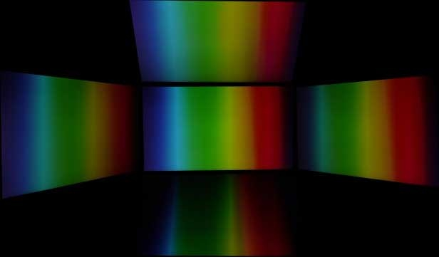
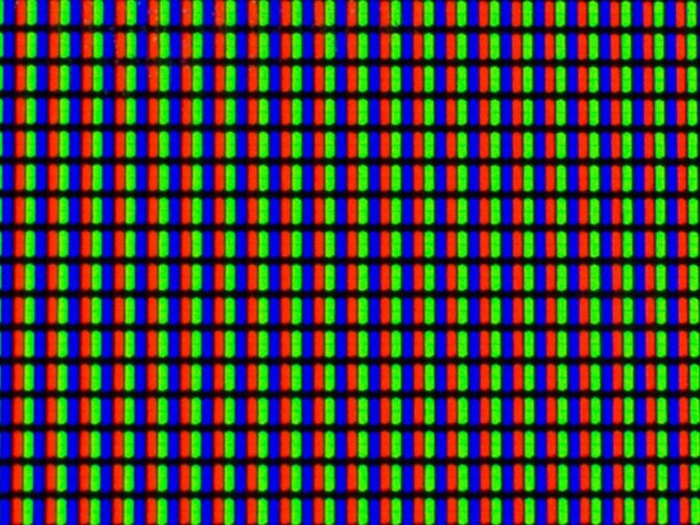

El suplemento que está leyendo (micro-sitio web) corresponde a la primera actividad del curso "Desarrollador Full Stack" dictado por el Instituto Superior
Politécnico de Córdoba. Esta actividad trata sobre HTML (lenguaje de marcas
de hipertexto) y CSS (hojas de estilo en cascada).
Observación: Toda la información publicada en este sitio no ha sido corroborada y sólo es de
relleno a fines prácticos del ejercicio.
Tecnologías de paneles
Todo monitor con panel de cristal líquido tiene un tipo de matriz (o panel) que
tiene unas características específicas que le hacen adecuado para según unas u otras actividades. En
este tutorial hablaremos de los tres tipos de paneles que hay ahora mismo y qué panel es el que debes de
elegir para tu pantalla, en función del uso.
La tecnología Thin Film Transistor Liquid Crystal Display (abreviado, TFT LCD) lleva con nosotros más
años de los que muchos de vosotros suponéis. Los primeros paneles LCD se comenzaron a fabricar en el año
1986, aunque por aquel entonces solo se podían encontrar montados en los primeros ordenadores personales
portátiles. Sin embargo, muy pronto los fabricantes de monitores comenzaron a lanzar sus primeros
modelos de este tipo de panel para sustituir a los tradicionales monitores de escritorio. Cosa que han
logrado hacer gracias a su tamaño y peso mucho más pequeño, que nos permite tener más espacio disponible
encima de nuestro escritorios.
En la actualidad hay tres tipos de paneles en uso en el mercado (cada uno con variantes): TN, VA e IPS.
Cada uno de ellos tiene sus propias características, que lo hacen más adecuado para según qué uso, y son
aspectos que debéis de tener bastante en cuenta a la hora de elegir para tu pantalla.
Paneles TN (Twisted Nematic)
Este tipo de panel es el primero que llegó al mercado de consumo en grandes cantidades, aunque ya
estábamos previamente familiarizados con ellos dado que son los que se emplean desde hace mucho
tiempo en muchos componentes electrónicos de consumo, como calculadoras.
Estos paneles funcionan realizando una realineación de las moléculas de cristal líquido entre dos
electrodos, permitiendo que la luz pase o deje de hacerlo en función de su estado.
La fabricación de este tipo de paneles es muy barata, lo que hace que se encuentren presentes en la
mayoría de paneles pertenecientes a la gama de entrada, aunque también en muchos modelos de la gama
alta destinados al gaming. Esto es así porque su característica más importante (después del reducido
precio) es la rapidez que presentan en la velocidad del cambio de estado, siendo bastante superior a
la que tienen sus contrincantes (es normal que este tipo de paneles tengan un tiempo de respuesta de
1 ms).

Fig.1 - Distorsión de colores según el ángulo de visión.
Paneles VA (Vertical Alignment)
Este segundo tipo de panel siempre ha estado en segundo plano, dado que inicialmente se empleaba
especialmente para monitores de diseño gráfico (cuando los paneles IPS no eran la norma, obviamente,
por ser todavía demasiado caros). Sin embargo, la popularización de los paneles IPS los acabó
dejando un poco en el olvido, dado que les cuesta bastante más cambiar de estado a los píxeles
(originalmente, no era raro ver tiempos de respuesta de 12 ms en este tipo de paneles).
A pesar del alto tiempo de respuesta inicial de ellos, este tipo de paneles se están volviendo a
poner otra vez de moda entre los usuarios porque permiten altas tasas de refresco vertical (los
famosos 144 Hz están disponibles para muchos de estos modelos) y de la muy superior relación de
contraste estático frente a los paneles IPS y TN, aparte de conseguir un mejor brillo de pantalla,
lo que los hace candidatos perfectos para ser empleados en monitores que posean HDR como
característica.
Todo lo anterior hace que los paneles VA estén más orientados al diseño gráfico y al entretenimiento
en forma de películas, aunque los últimos modelos que están saliendo al mercado con altas tasas de
refresco los están convirtiendo también en una buena apuesta para el gaming. También lo es que
muchos monitores de gran tamaño y alta resolución (por encima de la tradicional Full HD) estén
optando por equipar esos paneles en su interior.

Fig.2 - Matriz de un panel VA.
Paneles IPS (In-Plane Switching)
Este tipo de panel es, probablemente, el modelo de panel más utilizado hoy en día, dado que posee
todas las características de los paneles VA pero su tiempo de respuesta es bastante inferior al que
presentan ese tipo de paneles (es normal ver modelos con un tiempo de respuesta de 4 ms). En
general, este tipo de paneles son los que mejor representan los colores de los tres tipos, al igual
que presentan la menor variación en los colores representados en función del ángulo desde el que se
ve la pantalla.
Curiosamente, los paneles IPS salieron al mercado para corregir los problemas de calidad de imagen
que tenían los paneles TN pero, dado que eran muy caros de fabricar, no se comenzaron a popularizar
hasta bastantes años después de la invención de esta tecnología.
A pesar de sus ventajas más que obvias, los paneles IPS también presentan ciertas desventajas por su
diseño, entre las que hay que destacar que sus ratios de contraste no son especialmente altos (lo
normal son 1000:1) y muchas veces presentan problemas de fugas de luz en los bordes de la pantalla.
Disfrutá de todas las cualidades que el monitor Dell E2417H tiene para ofrecerte.
Percibí las imágenes de una manera completamente diferente y complementa cualquier espacio ya sea en
tu casa u oficina.
Un monitor a tu medida
Con tu pantalla LED no solo ahorrás energía, ya que su consumo es bajo, sino que vas a ver colores
más nítidos y definidos en tus películas o series favoritas.
Una experiencia visual de calidad
Este monitor de 23.8" te va a resultar de gran comodidad para estudiar, trabajar o ver una película
en tus tiempos de ocio. Asimismo, su resolución de 1920 x 1080 te permite disfrutar de momentos
únicos gracias a una imagen con gran nitidez.
Disfrutá de todas las cualidades que el monitor Dell P2419H tiene para ofrecerte.
Percibí las imágenes de una manera completamente diferente y complementa cualquier espacio ya sea en
tu casa u oficina.
Un monitor a tu medida
Con tu pantalla LED no solo ahorrás energía, ya que su consumo es bajo, sino que vas a ver colores
más nítidos y definidos en tus películas o series favoritas.
Una experiencia visual de calidad
Este monitor de 24" te va a resultar de gran comodidad para estudiar, trabajar o ver una película en
tus tiempos de ocio. Asimismo, su resolución de 1920 x 1080 te permite disfrutar de momentos únicos
gracias a una imagen con gran nitidez.
Disfrutá de todas las cualidades que el monitor BenQ GW2480 tiene para ofrecerte.
Percibí las imágenes de una manera completamente diferente y complementa cualquier espacio ya sea en
tu casa u oficina.
Un monitor a tu medida
Con tu pantalla LED no solo ahorrás energía, ya que su consumo es bajo, sino que vas a ver colores
más nítidos y definidos en tus películas o series favoritas.
Una experiencia visual de calidad
Este monitor de 23.8" te va a resultar de gran comodidad para estudiar, trabajar o ver una película
en tus tiempos de ocio. Asimismo, su resolución de 1920 x 1080 te permite disfrutar de momentos
únicos gracias a una imagen con gran nitidez. Por último, su tiempo de respuesta de 5 ms lo hace
ideal para gamers y cinéfilos porque es capaz de mostrar imágenes en movimiento sin halos o bordes
borrosos.